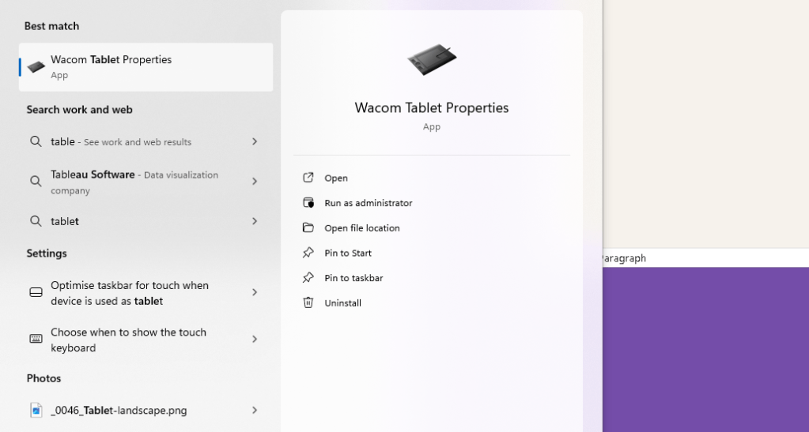
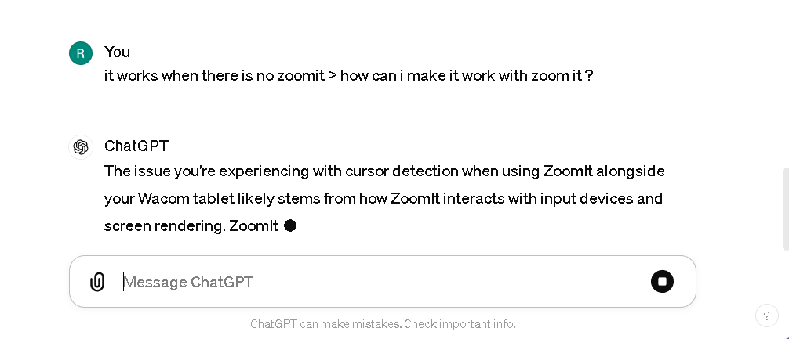
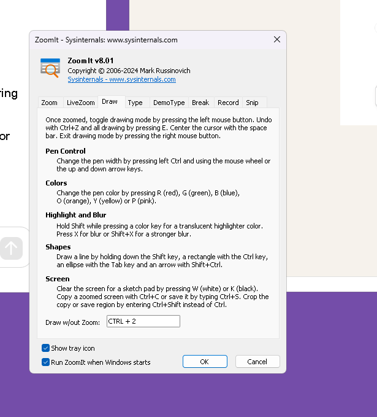
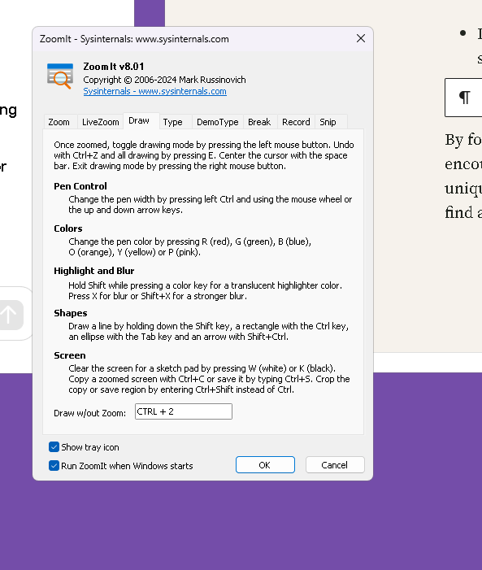
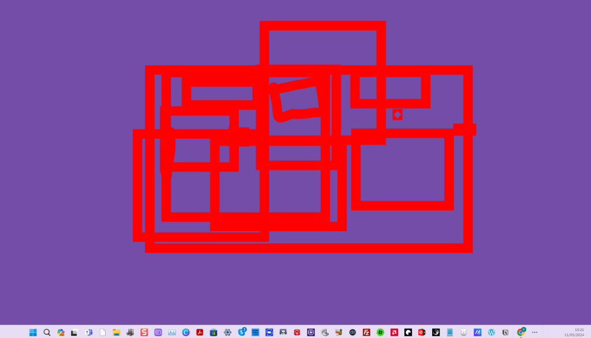

Finding the location of the cursor with Wacom tablet

Finding the location of the cursor when using a Wacom tablet involves understanding how the tablet interfaces with your computer and how cursor positioning is managed. Here are the general steps and tips for tracking cursor location on various operating systems:
1. Understanding Tablet Settings
-
Mapping: Ensure your tablet is properly mapped to your monitor in the tablet settings. This determines how the tablet's surface corresponds to the screen area.
-
Mode Selection: Tablets typically operate in either "Pen Mode" or "Mouse Mode". In Pen Mode, the cursor position corresponds directly to the point on the tablet where the pen touches. In Mouse Mode, the pen behaves more like a traditional mouse.
2. Software Tools
-
Wacom Tablet Properties: You can use the Wacom Tablet Properties utility (available on Windows and macOS) to customize settings like mapping and sensitivity which directly affect how the cursor is positioned and tracked.
-
Driver Updates: Ensure that your tablet’s drivers are up-to-date. Driver updates can resolve issues related to cursor tracking and responsiveness.
3. Operating System Settings
-
Windows: Access the Control Panel and look for the 'Pen and Touch' settings to adjust how the cursor functions with touch inputs.
-
macOS: Use System Preferences to adjust 'Accessibility' settings for better cursor and pointer visibility and control.
-
Linux: Configuration might require more manual setup through settings in the System Settings or via terminal commands to adjust input device parameters.
4. Programming and Custom Scripts
-
If you're looking to programmatically find the cursor position using a Wacom tablet, you can use programming libraries or APIs provided by Wacom, such as the Wacom Ink SDK for developers.
-
Languages like Python can interface with these APIs to fetch real-time data on the pen’s position and pressure.
5. Third-Party Software
- There are applications available that enhance or modify the way cursor positioning works with graphic tablets. Software like Lazy Nezumi on Windows or Hej Stylus on macOS can offer more granular control over cursor behavior.
6. Troubleshooting Common Issues
-
If the cursor is not appearing where expected, recalibrate your device through its settings. Calibration aligns the cursor's screen position with the point of contact on the tablet surface.
-
Check for interference from other devices and ensure the tablet is positioned correctly relative to your monitor.
By adjusting these settings and understanding how your specific tablet model interfaces with your computer, you can effectively manage and find the cursor's location with precision. If you need step-by-step guidance for a specific device or operating system, please provide more details about your setup.
Yes, most Wacom tablets have a feature called "Proximity Sensing" or a similar functionality that allows you to see where the pen is relative to the tablet even when it's not touching the surface. This feature is particularly useful for positioning the cursor correctly before making contact with the tablet, ensuring that you draw in the intended area on your screen. Here’s how you can typically manage this setting:
Enabling Proximity Sensing
-
Accessing Tablet Settings:
-
Open the Wacom Tablet Properties. This can usually be done by searching for it in the Start Menu on Windows or in System Preferences on macOS.
-
Adjusting Pen Settings:
-
Look for options related to the pen or stylus. You should find settings that adjust how the tablet responds to the pen, including proximity sensitivity.
-
Cursor Display:
-
Ensure the option that shows the cursor when the pen is near the tablet is enabled. This might be labeled differently depending on your tablet model and driver version.
-
Calibration:
-
Calibrate your pen and tablet to ensure accuracy. This helps align the physical location of the pen with the cursor's location on the screen.
Tips for Better Proximity Detection
-
Driver Update: Make sure your Wacom tablet drivers are up to date. Updated drivers can improve how well the tablet detects the pen, even before it touches the surface.
-
Check Pen Battery (if applicable): If your pen is battery-powered (some Wacom stylus models are), a low battery might affect performance.
-
Interference: Remove any electronic devices that might interfere with electromagnetic fields near your tablet.
Additional Software Features
-
Customizing Cursors: Some software programs allow for customized cursor icons or visual guides that appear when the pen is near the tablet, enhancing visibility.
-
Third-party Tools: Tools like Lazy Nezumi (Windows) or Hej Stylus (macOS) can provide additional cursor control features, including more visible or enhanced cursor effects when the pen is in proximity.
If these settings are not immediately apparent or if you're using an older model, consulting the user manual specific to your Wacom model can provide additional guidance. Wacom's customer support is also a helpful resource for model-specific questions.
it works when there is no zoomit > how can i make it work with zoom it ?

run at start

The issue you're experiencing with cursor detection when using ZoomIt alongside your Wacom tablet likely stems from how ZoomIt interacts with input devices and screen rendering. ZoomIt, a screen magnification and annotation tool by Sysinternals, can sometimes interfere with or override tablet input settings because it captures screen input at a low level to perform its functions.
Here are several steps and troubleshooting tips to help resolve compatibility issues between your Wacom tablet and ZoomIt:
1. Run Both Programs as Administrator
- Running both ZoomIt and the Wacom Tablet software with administrator privileges can sometimes resolve issues where one program blocks or overrides the other. Right-click on the application shortcuts and select "Run as administrator."
2. Adjust Wacom Tablet Properties
- Recheck and adjust the Wacom Tablet Properties to ensure all settings are correctly configured for the best compatibility with other software. Pay special attention to any settings that control how the pen interacts when close to the tablet and the screen mapping.
3. Update Drivers and Software
- Ensure that both your Wacom tablet drivers and ZoomIt are up to date. An update may resolve compatibility issues.
4. Configure ZoomIt Settings
- Open ZoomIt and go through its options to see if there are any settings related to input or cursor handling that might be adjusted to better work with tablet input.
5. Experiment with Compatibility Modes
- If running the programs normally doesn't solve the issue, try setting the compatibility mode for ZoomIt. Right-click on the ZoomIt executable, select 'Properties,' go to the 'Compatibility' tab, and try different compatibility settings, such as running it in compatibility mode for an earlier version of Windows.
6. Disable Windows Ink (if applicable)
- Some users find that disabling Windows Ink can help resolve issues with cursor visibility and responsiveness when using graphic tablets with certain applications. You can disable Windows Ink from the Wacom Tablet Properties under the "Mapping" or "Pen" settings, depending on your model.
7. Use Alternative Software
- If ZoomIt continues to interfere with your Wacom tablet’s functionality, consider using an alternative magnification or annotation tool that might be more compatible with Wacom products. Windows, for example, has built-in magnification and annotation features that might not interfere as much.
8. Contact Support
- If none of these steps work, consider reaching out to Wacom support or the Sysinternals support forums for more specific advice.
By following these steps, you can potentially resolve the issues you're encountering with ZoomIt and your Wacom tablet. Each setup can be unique, so some experimentation with settings might be necessary to find a solution that works for you.


Alternative programs to zoomit
If you're looking for alternatives to ZoomIt, which is a screen zoom and annotation tool for presentations, there are several other programs that you can consider. Each offers unique features that might better suit your needs:
-
Epic Pen - This is a tool that allows you to draw, write, and highlight directly over any software on Windows, making it versatile for presentations and interactive sessions.
-
Microsoft's Snip & Sketch - Integrated into Windows, this tool offers basic screen capture and annotation capabilities, which can be useful for quickly highlighting or marking up what's on your screen.
-
Lightshot - A simple and intuitive screen capture tool that allows quick annotations, easy sharing, and editing of screenshots.
-
ShareX - This is a more advanced tool that includes robust screen capturing, recording, and productivity tools. It offers many customizations and supports various annotation tools.
-
Greenshot - A lightweight screenshot software tool for Windows that allows you to capture screenshots, annotate them, and export them in various ways.
-
Skitch - Part of the Evernote suite of tools, Skitch provides easy-to-use annotation tools that are great for quickly marking up screenshots and sharing them.
These alternatives offer various functionalities that range from simple annotations to comprehensive screen capturing and editing features. You can choose based on which features are most important for your workflow.
Bad drawing example
Imported from rifaterdemsahin.com · 2024